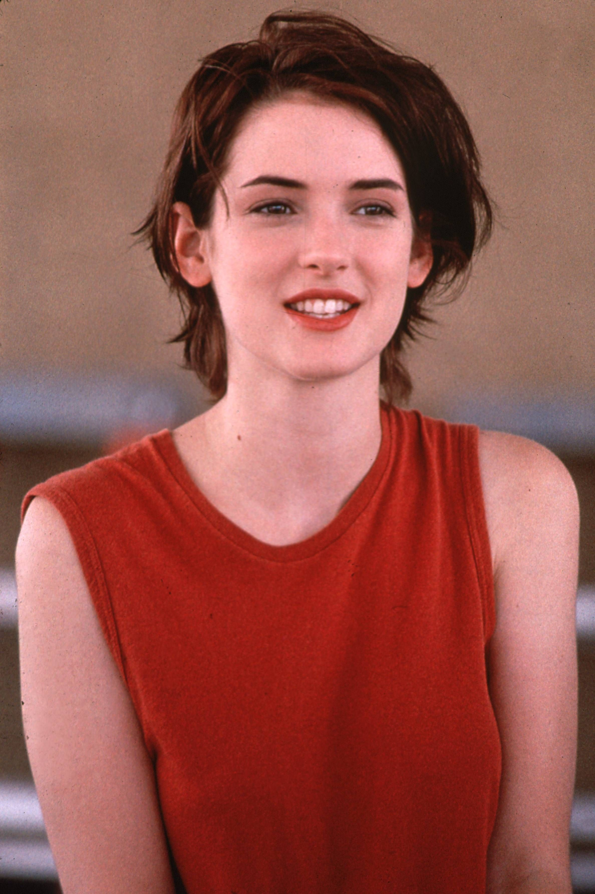
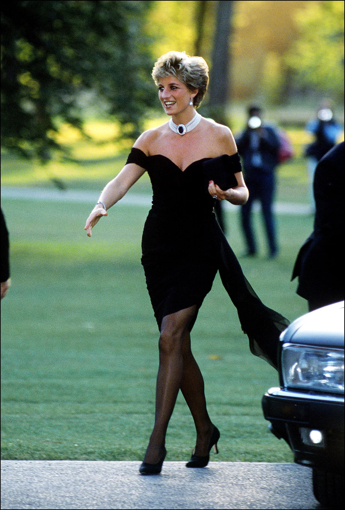
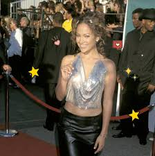
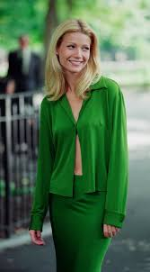

íconos de estilo
Kate Moss:Una de las superestrellas de la industria de aquellos años, pasarela tras pasarela, así como en cada photoshoot, Kate Moss mostró un estilo camaleónico que popularizó los skinny jeans y el estilo grunge dentro de la industria de la moda, pero sin dejar de ser muy girly.

Jennifer Aniston:Una de las estrellas de Friends, la serie de moda de los 90, todos estaban obsesionados con Rachel, y por una buena razón. Dentro y fuera del show, Jennifer Aniston fue todo un ícono del estilo girly. No sólo fue el clásico corte de cabello que se hizo popular entre las mujeres, sino también que, como buena fashionista, Rachel tenía los mejores y más envidiables outfits en cada episodio.

Winona Rider:Ryder fue una las “It girl” más famosas de la década. Su estilo era una combinación de todo lo cool de la moda de los 90: el grunge, lo casual y hasta lo goth. Sus más famosos outfits eran accesibles, pero sin dejar de tener cierta elegancia. Definitivamente fue un ícono de esa época.
Princesa Diana:En los años 90, la princesa Diana, resaltó por alejarse de los estereotipos de la nobleza. En muchos sentidos, “Lady Di” fue una rebelde y, por supuesto, también se convirtió en un icono de la moda. Diana impuso moda con un estilo más sencillo y cómodo en sus actividades cotidianas, pero deslumbraba con impactantes outfits para eventos que así lo ameritaban.

Lo que se usaba en los 90s
Abrigo camel: El abrigo de color camel era un auténtico must en los años 90. A día de hoy, junto con el negro, el abrigo camel es el básico más reiterado del otoño-invierno. Es un aliado infalible para cualquier look y cualquier ocasión.
Pantalones de cuero: El cuero o efecto piel es el tejido por excelencia de la década. Y es que desde Chanel a Alexander McQueen pasando por Hermès o Longchamp, no hay firma que no haya apostado por el cuero en sus últimas colecciones.
Jersey de cuello alto y vaqueros rectos: Los pantalones vaqueros rectos eran los favoritos de Cindy Crawford, Julia Roberts, Gwyneth Paltrow y otros iconos de los 90. En las tiendas este tipo de pantalón siempre está presente en mayor o menor medida.
Minifalda negra: La minifalda negra era la favorita de Rachel Green (Jennifer Aniston) en Friends. Y es que la actriz la lució de forma constante durante las 10 temporadas de la serie tanto para situaciones casuales como para otras más serias.
Momentos más iconic
Revenge dress: Lady Di protagonizó miles de momentos ‘fashion’ históricos, el día del ‘vestido negro de la venganza’ es uno de los más reconocidos. En ese momento, la infidelidad por parte del Príncipe Carlos con Camila ya estaba en boca de todos y Diana, lejos de esconderse, se puso este despampanante vestido.
Total look:El ‘total look’ de Linda Evangelista en Ralph Lauren otro de los grandes rostros de la moda de la época. Si Linda lo llevaba sobre la pasarela, sería tendencia. Tanto, que el truco de lucir la camisa con un único botón atado que presentó en del desfile de Ralph Lauren SS97 se ha mantenido hasta día de hoy.
El top de brillos de Jennifer López: Este top de marcado acento noventero (que, por cierto, también llevó Victoria Beckham entre otras muchas celebrities) es todo un icono y ha inspirado posteriores diseños.
El look verde de Gwyneth Paltrow en ‘Grandes Esperanzas’: El dos piezas formado por camisa y falda midi en color verde y firmado por la diseñadora Donna Karan que una jovencísima Gwyneth Paltrow lucía en la película de 1998 Grandes Esperanzas es uno de los más memorables de la década y de la historia del cine.
